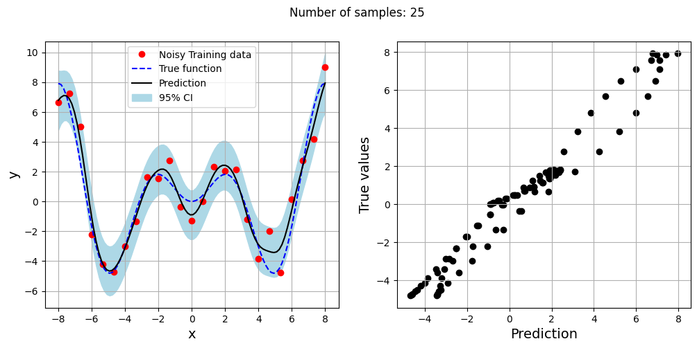
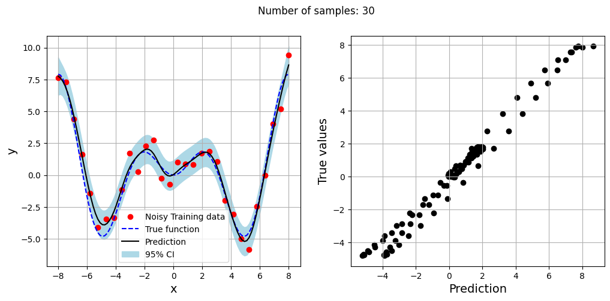
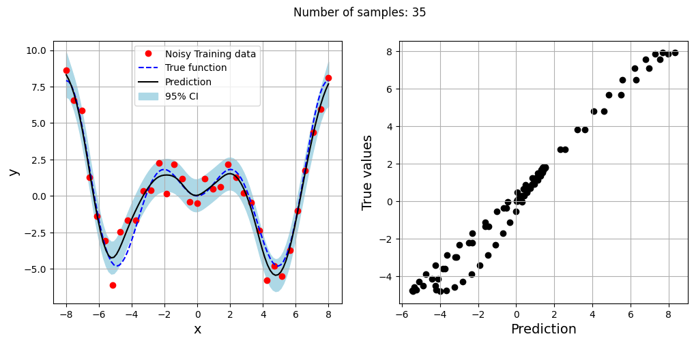
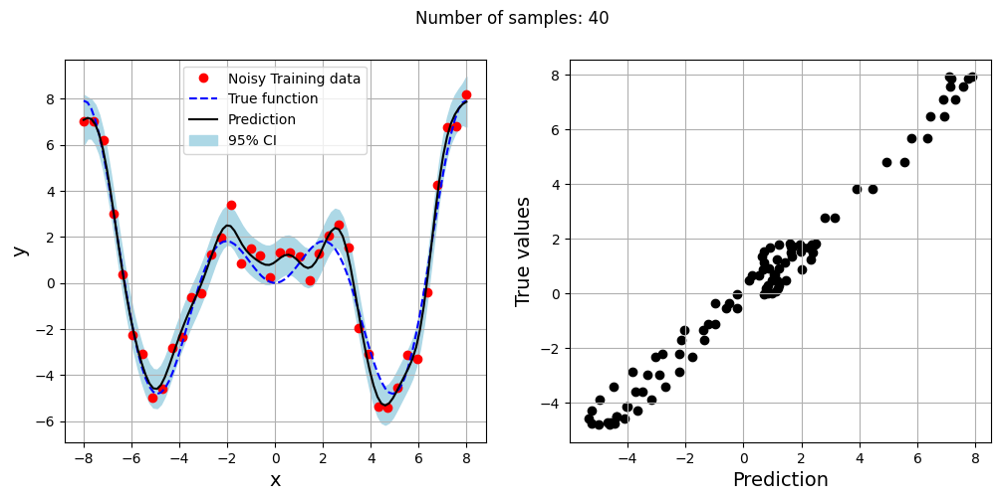
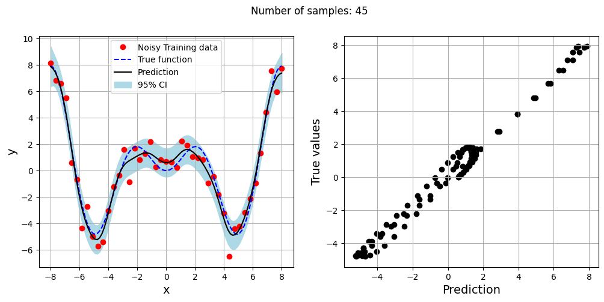
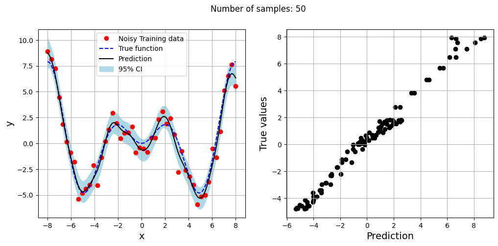

Engineering Modeling and Design Optimization#
Modeling Noisy Data using Regression Kriging#
Adding simulated gaussian noise to the xsinx function and modelling using regression kriging
import numpy as np
from smt.surrogate_models import KRG, RBF
from smt.problems import TorsionVibration, CantileverBeam, WingWeight
from smt.sampling_methods import LHS, FullFactorial
import matplotlib.pyplot as plt
from sklearn.metrics import mean_squared_error
from sklearn.preprocessing import MinMaxScaler, StandardScaler
from sklearn.decomposition import PCA, KernelPCA
from scipy.stats import norm
# Defining the noisy xsinx function
forrester = lambda x: x*np.sin(x) + norm.rvs(scale = 1.0, size=x.shape)
# Plotting data
xplot = np.linspace(-8, 8, 100)
yplot = xplot * np.sin(xplot)
# Creating array of training sample sizes
samples = np.array([25,30,35,40,45,50])
# Initializing nrmse list
nrmse = []
# Fitting with different sample size
for sample in samples:
xtrain = np.linspace(-8, 8, sample)
ytrain = forrester(xtrain)
# Fitting the kriging
sm = KRG(theta0=[1e-2], corr='matern52', theta_bounds=[1e-6, 1e2], print_global=False, eval_noise = True)
sm.set_training_values(xtrain, ytrain)
sm.train()
# Predict at test values
yplot_pred = sm.predict_values(xplot).reshape(-1,)
yplot_var = sm.predict_variances(xplot).reshape(-1,)
# Calculating average nrmse
nrmse.append(np.sqrt(mean_squared_error(yplot, yplot_pred)) / np.ptp(yplot))
# Plotting prediction
fig, ax = plt.subplots(1,2, figsize=(12,5))
ax[0].plot(xtrain, ytrain, 'ro', label='Noisy Training data')
ax[0].plot(xplot, yplot, 'b--', label='True function')
ax[0].plot(xplot, yplot_pred, 'k', label='Prediction')
ax[0].fill_between(xplot, yplot_pred - 2*np.sqrt(yplot_var), yplot_pred + 2*np.sqrt(yplot_var), color='lightblue', label='95% CI')
ax[0].set_xlabel("x", fontsize=14)
ax[0].set_ylabel("y", fontsize=14)
ax[0].grid()
ax[0].legend()
ax[1].scatter(yplot_pred, yplot, c="k")
ax[1].set_xlabel("Prediction", fontsize=14)
ax[1].set_ylabel("True values", fontsize=14)
ax[1].grid()
fig.suptitle("Number of samples: {}".format(sample))






Feature Scaling for engineering modeling#
Modeling the Torsion Vibration problem from SMT using RBF#
Scale of design variables vary from 1e+07 to 1e-02
# Defining the Torsion Vibration problem
ndim = 15
problem = TorsionVibration(ndim=ndim)
Setting up the training and testing data along with the standard scaler
def find_sigma(x_train, y_train, x_test, y_test, sigmas, xstd_scaler = None, ystd_scaler = None):
"""
This function finds the best sigma for a RBF model by fitting the model to the training data and
evaluating it on testing data. The best sigma is the one that achieves minimum normalized RMSE.
Parameters
----------
x_train : numpy array
Training data x values
y_train : numpy array
Training data y values
x_test : numpy array
Testing data x values
y_test : numpy array
Testing data y values
sigmas : numpy array
Sigmas to be tested
Returns
-------
best_sigma : float
Best sigma value
metric : list
List of NRMSE values for each sigma
"""
# Initializing normalized RMSE list
metric = []
# Fitting various polynomials
for sigma in sigmas:
# Fit the RBF to current fold
sm = RBF(d0=sigma, poly_degree=-1, print_global=False)
sm.set_training_values(x_train, y_train)
sm.train()
# Predict at test values
if xstd_scaler is not None and ystd_scaler is not None:
y_pred = sm.predict_values(xstd_scaler.transform(x_test))
y_pred = ystd_scaler.inverse_transform(y_pred)
else:
y_pred = sm.predict_values(x_test)
# Adding all the rmse to calculate average later
nrmse = np.sqrt(mean_squared_error(y_test, y_pred)) / np.ptp(y_test)
# Calculating average nrmse
metric.append(nrmse)
best_sigma = sigmas[np.argmin(metric)]
return best_sigma, metric
# Creating testing data for the problem
test_sampler = FullFactorial(xlimits=problem.xlimits)
num_test = 100
xtest = test_sampler(num_test)
ytest = problem(xtest)
# Standard scaling
xstd_scaler = StandardScaler()
ystd_scaler = StandardScaler()
# Fitting with different sample size
train_sampler = LHS(xlimits=problem.xlimits, criterion="ese")
# Defining the number of samples
samples = [5,10,15,20,25,30,35,40,45,50]
scaled_nrmse = []
nrmse = []
for sample in samples:
# Creating a model with and without scaling
num = sample
xtrain = train_sampler(num)
ytrain = problem(xtrain)
xtrain_scaled = xstd_scaler.fit_transform(xtrain)
ytrain_scaled = ystd_scaler.fit_transform(ytrain)
sigmas = np.logspace(-15, 15, 1000)
best_sigma, test_metric = find_sigma(xtrain, ytrain, xtest, ytest, sigmas, xstd_scaler=None, ystd_scaler=None)
best_sigma_scaled, test_metric_scaled = find_sigma(xtrain_scaled, ytrain_scaled, xtest, ytest, sigmas, xstd_scaler, ystd_scaler)
# Fitting RBF using scaled data
sm_scaled = RBF(d0=best_sigma_scaled, print_global = False)
sm_scaled.set_training_values(xtrain_scaled, ytrain_scaled)
sm_scaled.train()
# Fitting RBF using unscaled data
sm = RBF(d0=best_sigma, print_global = False)
sm.set_training_values(xtrain, ytrain)
sm.train()
# Predicting on test data
ypred_scaled = sm_scaled.predict_values(xstd_scaler.transform(xtest))
ypred_scaled = ystd_scaler.inverse_transform(ypred_scaled)
ypred = sm.predict_values(xtest)
scaled_nrmse.append(np.sqrt(mean_squared_error(ytest, ypred_scaled)) / np.ptp(ytest))
nrmse.append(np.sqrt(mean_squared_error(ytest, ypred)) / np.ptp(ytest))
# Plotting NMRSE
fig, ax = plt.subplots()
ax.plot(samples, np.array(nrmse), c="k", marker=".", label = "Unscaled Data")
ax.plot(samples, np.array(scaled_nrmse), c="r", marker=".", label = "Scaled Data")
ax.grid(which="both")
ax.legend()
ax.set_xlim((samples[0], samples[-1]))
ax.set_xlabel("Number of samples", fontsize=14)
ax.set_ylabel("Normalized RMSE", fontsize=14)
Text(0, 0.5, 'Normalized RMSE')
Exploitation of unconstrained modified Branin function using RBF model#
Using scaled and unscaled data
def modified_branin(x):
dim = x.ndim
if dim == 1:
x = x.reshape(1, -1)
x1 = x[:,0]
x2 = x[:,1]
a = 1.
b = 5.1 / (4.*np.pi**2)
c = 5. / np.pi
r = 6.
s = 10.
t = 1. / (8.*np.pi)
y = a * (x2 - b*x1**2 + c*x1 - r)**2 + s*(1-t)*np.cos(x1) + s + 5*x1
if dim == 1:
y = y.reshape(-1)
return y
# Bounds
lb = np.array([-5, 0])
ub = np.array([10, 15])
# Plotting data
sampler = FullFactorial(xlimits=np.array( [[lb[0], ub[0]], [lb[1], ub[1]]] ))
num_test = 100
xtest = sampler(num_test)
ytest = modified_branin(xtest)
Using unscaled version of the data#
from pymoo.core.problem import Problem
from pymoo.algorithms.soo.nonconvex.de import DE
from pymoo.optimize import minimize
from pymoo.config import Config
Config.warnings['not_compiled'] = False
# Problem class
class Exploitation(Problem):
def __init__(self, sm):
super().__init__(n_var=2, n_obj=1, n_constr=0, xl=lb, xu=ub)
self.sm = sm # store the surrogate model
def _evaluate(self, x, out, *args, **kwargs):
out["F"] = self.sm.predict_values(x)
# Optimization algorithm
algorithm = DE(pop_size=100, CR=0.8, dither="vector")
sampler = LHS(xlimits=np.array( [[lb[0], ub[0]], [lb[1], ub[1]]] ), criterion='ese', random_state = 45)
# Training data
num_train = 20
xtrain = sampler(num_train)
ytrain = modified_branin(xtrain)
# Variables
itr = 0
max_itr = 30
tol = 5e-3
delta_f = [1]
bounds = [(lb[0], ub[0]), (lb[1], ub[1])]
corr = 'squar_exp'
fs = 12
# Sequential sampling Loop
while itr < max_itr and tol < delta_f[-1]:
print("\nIteration {}".format(itr + 1))
sigmas = np.logspace(-5, 5, 100)
best_sigma, test_metric = find_sigma(xtrain, ytrain, xtest, ytest, sigmas)
# Initializing the kriging model
sm = RBF(d0=best_sigma, print_global=False)
# Setting the training values
sm.set_training_values(xtrain, ytrain)
# Creating surrogate model
sm.train()
# Find the minimum of surrogate model
result = minimize(Exploitation(sm), algorithm, verbose=False)
# Computing true function value at infill point
y_infill = modified_branin(result.X.reshape(1,-1))
if itr == 0:
delta_f = [np.abs(result.F - y_infill)/np.abs(result.F)]
else:
delta_f = np.append(delta_f, np.abs(result.F - y_infill)/np.abs(result.F))
print("Change in f: {}".format(delta_f[-1]))
print("f*: {}".format(y_infill))
print("x*: {}".format(result.X))
# Appending the the new point to the current data set
xtrain = np.vstack(( xtrain, result.X.reshape(1,-1) ))
ytrain = np.append( ytrain, y_infill )
itr = itr + 1 # Increasing the iteration number
# Printing the final results
print("\nBest obtained point:")
print("x*: {}".format(xtrain[np.argmin(ytrain)]))
print("f*: {}".format(np.min(ytrain)))
Iteration 1
Change in f: [0.86363425]
f*: [-7.49170155]
x*: [-4.99999993 14.99999999]
Iteration 2
Change in f: 0.4650742769067305
f*: [-7.14189051]
x*: [-4.99999131 14.92141564]
Iteration 3
Change in f: 0.10969420294742016
f*: [-12.3319303]
x*: [-4.36136831 13.73228963]
Iteration 4
Change in f: 0.06977226444213074
f*: [-12.27345055]
x*: [-4.35391747 13.68575025]
Iteration 5
Change in f: 0.04883276370440886
f*: [-12.22820958]
x*: [-4.35352576 13.67091625]
Iteration 6
Change in f: 0.03701170306520387
f*: [-12.20263557]
x*: [-4.35122221 13.65450544]
Iteration 7
Change in f: 0.027827491396385576
f*: [-12.16658083]
x*: [-4.35285117 13.65034007]
Iteration 8
Change in f: 0.02454071417509867
f*: [-12.17471211]
x*: [-4.34973578 13.64064017]
Iteration 9
Change in f: 0.020906584754386125
f*: [-12.16803629]
x*: [-4.34897931 13.63578379]
Iteration 10
Change in f: 0.01836876593377306
f*: [-12.16557879]
x*: [-4.34835039 13.6326435 ]
Iteration 11
Change in f: 0.014949850019911493
f*: [-12.14673327]
x*: [-4.34866043 13.62840392]
Iteration 12
Change in f: 0.013149670807310334
f*: [-12.14152928]
x*: [-4.34901115 13.62825894]
Iteration 13
Change in f: 0.0132921903579867
f*: [-12.15641396]
x*: [-4.347687 13.62743668]
Iteration 14
Change in f: 0.010620771581771144
f*: [-12.13669153]
x*: [-4.34830603 13.62414647]
Iteration 15
Change in f: 0.010355404985117528
f*: [-12.14268504]
x*: [-4.34753801 13.62290786]
Iteration 16
Change in f: 0.011094886158800317
f*: [-12.15994639]
x*: [-4.34712503 13.62628642]
Iteration 17
Change in f: 0.009374210266325756
f*: [-12.1476683]
x*: [-4.34682132 13.6215776 ]
Iteration 18
Change in f: 0.008718922963013664
f*: [-12.14645156]
x*: [-4.34605778 13.61828376]
Iteration 19
Change in f: 0.008977483304937672
f*: [-12.15548483]
x*: [-4.34583513 13.62002476]
Iteration 20
Change in f: 0.005094065353971081
f*: [-12.11436744]
x*: [-4.34963745 13.62287137]
Iteration 21
Change in f: 0.007757282322089059
f*: [-12.14961381]
x*: [-4.34611855 13.61942762]
Iteration 22
Change in f: 0.00501831864179339
f*: [-12.12103915]
x*: [-4.34914585 13.62288945]
Iteration 23
Change in f: 0.0060408975198481775
f*: [-12.13612156]
x*: [-4.3479726 13.62269661]
Iteration 24
Change in f: 0.0054083902355813885
f*: [-12.13170754]
x*: [-4.34740413 13.61923682]
Iteration 25
Change in f: 0.005913637172099506
f*: [-12.14058682]
x*: [-4.34625761 13.61736818]
Iteration 26
Change in f: 0.005412487984312021
f*: [-12.13744267]
x*: [-4.34650712 13.61742655]
Iteration 27
Change in f: 0.0024459987807699222
f*: [-12.10411271]
x*: [-4.34875448 13.6165316 ]
Best obtained point:
x*: [-3.16664788 10.66867206]
f*: -12.65470688602858
Using scaled version of the data#
# Problem class
class Exploitation(Problem):
def __init__(self, sm, xscaler, yscaler):
super().__init__(n_var=2, n_obj=1, n_constr=0, xl=lb, xu=ub)
self.sm = sm # store the surrogate model
self.xscaler = xscaler
self.yscaler = yscaler
def _evaluate(self, x, out, *args, **kwargs):
out["F"] = self.yscaler.inverse_transform(self.sm.predict_values(self.xscaler.transform(x)))
# Optimization algorithm
algorithm = DE(pop_size=100, CR=0.8, dither="vector")
sampler = LHS(xlimits=np.array( [[lb[0], ub[0]], [lb[1], ub[1]]] ), criterion='ese', random_state=45)
# Training data
num_train = 20
xtrain = sampler(num_train)
ytrain = modified_branin(xtrain).reshape(-1,1)
# Variables
itr = 0
max_itr = 30
tol = 5e-3
delta_f = [1]
# Sequential sampling Loop
while itr < max_itr and tol < delta_f[-1]:
print("\nIteration {}".format(itr + 1))
# Standard scaling
xstd_scaler = StandardScaler()
ystd_scaler = StandardScaler()
xtrain_scaled = xstd_scaler.fit_transform(xtrain)
if ytrain.ndim == 1:
ytrain = ytrain.reshape(-1,1)
ytrain_scaled = ystd_scaler.fit_transform(ytrain)
sigmas = np.logspace(-15, 15, 100)
best_sigma, test_metric = find_sigma(xtrain_scaled, ytrain_scaled, xtest, ytest, sigmas, xstd_scaler, ystd_scaler)
# Initializing the kriging model
sm = RBF(d0=best_sigma, print_global=False)
# Setting the training values
sm.set_training_values(xtrain_scaled, ytrain_scaled)
# Creating surrogate model
sm.train()
# Find the minimum of surrogate model
result = minimize(Exploitation(sm, xstd_scaler, ystd_scaler), algorithm, verbose=False)
# Computing true function value at infill point
y_infill = modified_branin(result.X.reshape(1,-1))
if itr == 0:
delta_f = [np.abs(result.F - y_infill)/np.abs(result.F)]
else:
delta_f = np.append(delta_f, np.abs(result.F - y_infill)/np.abs(result.F))
print("Change in f: {}".format(delta_f[-1]))
print("f*: {}".format(y_infill))
print("x*: {}".format(result.X))
# Appending the the new point to the current data set
xtrain = np.vstack(( xtrain, result.X.reshape(1,-1) ))
ytrain = np.append( ytrain, y_infill )
itr = itr + 1 # Increasing the iteration number
# Printing the final results
print("\nBest obtained point:")
print("x*: {}".format(xtrain[np.argmin(ytrain)]))
print("f*: {}".format(np.min(ytrain)))
Iteration 1
Change in f: [0.86856496]
f*: [-7.49169803]
x*: [-4.99999963 14.99999803]
Iteration 2
Change in f: 0.5288107812469868
f*: [-6.96336929]
x*: [-4.99999926 14.88238972]
Iteration 3
Change in f: 0.10983366880321722
f*: [-13.51045921]
x*: [-4.19433928 13.45952555]
Iteration 4
Change in f: 0.05758309736691329
f*: [-13.28724528]
x*: [-4.20483707 13.42580719]
Iteration 5
Change in f: 0.032865315729798394
f*: [-13.14077589]
x*: [-4.21575086 13.42023204]
Iteration 6
Change in f: 0.017218983215701894
f*: [-13.02067865]
x*: [-4.22382561 13.41308292]
Iteration 7
Change in f: 0.011637389623782728
f*: [-12.98932386]
x*: [-4.22555973 13.40991264]
Iteration 8
Change in f: 0.006080036880136135
f*: [-12.94762764]
x*: [-4.22833882 13.40753891]
Iteration 9
Change in f: 0.0034229314140226843
f*: [-12.93429573]
x*: [-4.22816109 13.40279174]
Best obtained point:
x*: [-4.19433928 13.45952555]
f*: -13.510459205242743